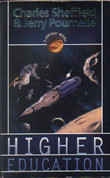

Higher Educationby Charles Sheffield & Jerry Pournelle
publisher: Tor Books
Fiction, 286 pages | 
(book cover art, Copyright © 1996 Vincent di Fate)
Used with Permission. |
Return to the Book MenuPrevious|Next
Description:
Rick Luban is a "tough kid" in a public high school. But when a prank goes awry, he finds a new opportunity-to go to space and learn how to mine asteroids. But will he survive the training?
Recommended for: Recommended for: space enthusiasts, people interested in the education system, mystery lovers.
Did-you-read questions:
Deadline: February 1, 2005.
These should be easy questions, but you should have the questions ready and keep an eye out during your reading. Each question should be answered with 1-2 sentences.
Note: these questions are not probably not the most important part of the book! Your essay will not have to cover these questions!
- Who "gets it" with a water balloon?
- Who is Rick's arch-rival in training?
- Why are there sprinklers in the ceiling of room B-2F?
- What does Gina do when Rick puts the moves on her?
- Where do the students hold their party?
Report Questions:Deadline: Peer Review Session on February 8, 2005; paper due February 10, 2005.
You should write a 3 - 4 page essay on one of the following questions. Your essay should include examples and references to the book, unless otherwise specified. Page number references are sufficient for citing material from the primary book. If you use outside materials, cite your sources in full. If you would rather write on a different topic, you may, but clear it with Mr. Howe or Ms. Sullivan first.
- In many ways this book is a critique of the way education is headed in America. What do you think about the author's predictions about the future of typical education? What do you think about the type of educational experience that Rick gets? Which do you think is better?
- Rick has several strengths and weaknesses. What one or two characteristics set him apart most dramatically from his peers? Justify your answer with examples from the book.
- Rick does a lot of growing up in this book, especially with regards to women. What do you think about Rick's approach towards women? Do you think this is realistic? What do you think about Rick's future encounters with women?
- What do you think about the book's view on the economy of space in the future? Is this a reasonable business venture for the future? Give examples from the book and from real life to make your case.
Graphic and Presentation:
Deadline: February 21 - March 3, 2005.You will give a 10 minute presentation on both of the following:
- Convince your peers that they should (or should not) read this book. (This may include a brief summary of the book.) Give examples of what was cool or worthwhile in the book, and what you got out of it (or didn't).
- Describe a (realistic) science idea that you learned about in this book, citing information from at least 2 external sources (other than the dictionary). If you would like help choosing or understanding an idea from your book, you are invited to come talk to Mr. Howe or Ms. Sullivan.
Note: This presentation should not be just a reading of your paper!Along with this presentation, you should have a graphic that will go with it. A Power Point presentation is recommended, but if you have a special idea for a something else, such as a model, an original video presentation, or a well done drawing/ painting/ sculpture/ etc., you may do so, provided it involves a similar level of effort and polish. Speak to Mr. Howe or Ms. Sullivan first if you are considering an alternate graphic format to the Power Point.
Return to the Book MenuPrevious|Next